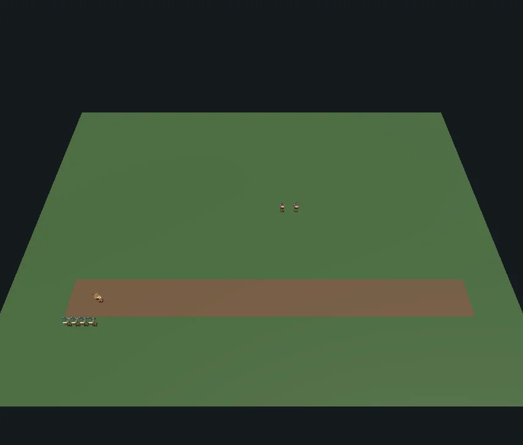
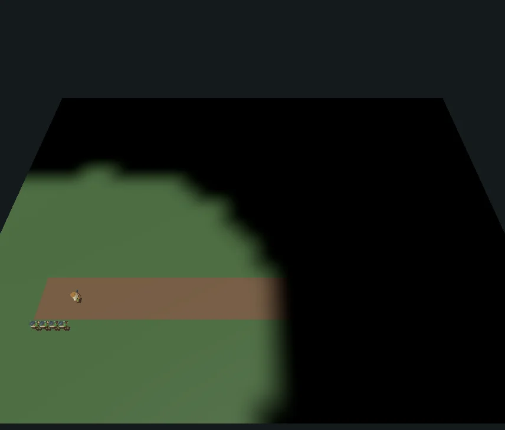
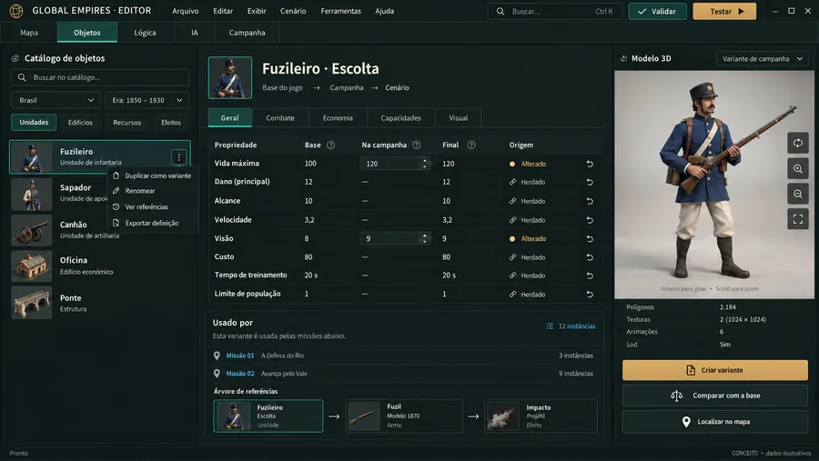

Gerado — não edite à mão · fonte: painel.json · 21 de outubro de 2026
Painel
Editor Global Empires
Editor independente e modular do GE. 86 decisões confirmadas; build técnico local disponível. Protótipo completo, migração integral e aceite humano ainda pendentes. Atualizado em 21 de outubro de 2026.
Build local · aceite pendenteDecisões confirmadas86
Tipos oficiais importados38
Capacidades inventariadas48
Ferramentas MCP19
Progresso do marco
0 de 6 frentes validadasFase atual: Protótipo 1 · implementação local e validação
- Pesquisa e decisõesfeita
- Protótipo 1 · implementação local e validaçãoatual
- Entrega seguinte · campanhas e C# autoralfutura
Agora
- Modelo modular e autoria já têm implementação localCatálogo por capacidades, variantes, mapa, participantes, escolta, grafos, câmeras, histórico, recuperação, exportação e automação. A aba Implementação detalha o alcance e os limites de cada módulo.
- Build Windows e provas técnicas disponíveisBuild 9, suítes amplas de 1.222 Sim e 588 View, verificações seletivas posteriores e prova nativa de exportação/retomada/reprodução. Esses resultados não equivalem ao aceite completo.
- Próximo fechamentoValidar a janela completa e autoria sem C#, concluir inventário da migração, caminhos de UI, medição de desempenho, CI e revisões obrigatórias.
Com você
- Aceite ED86 ainda abertoCriar e editar, salvar, reabrir, testar e jogar a missão exportada sem escrever C#. O protótipo só fecha após esse ciclo humano.
- Escopo seguinte já delimitadoCampanhas encadeadas e execução de C# autoral ficam para a próxima entrega. As artes mostram também essa direção futura.
Últimas imagens



